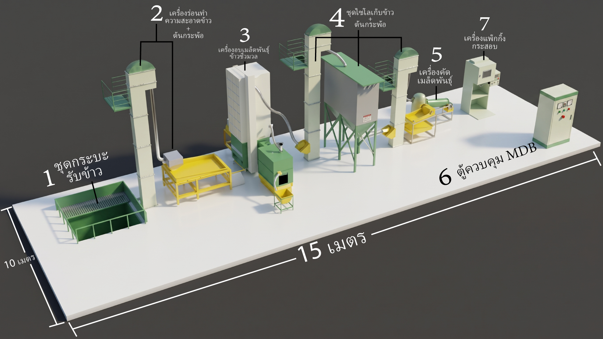
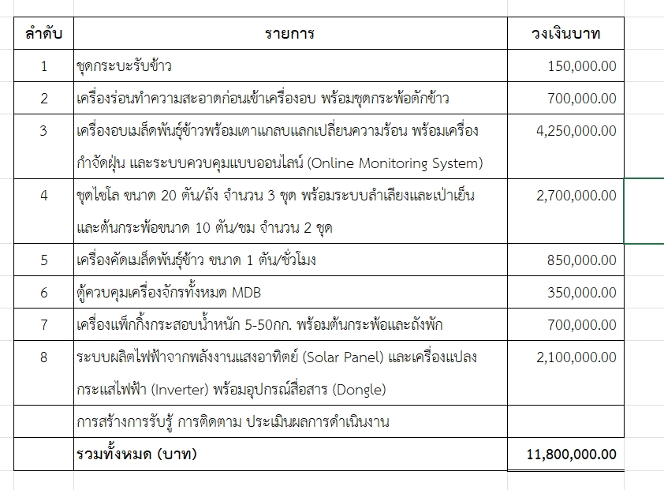

GEOGRAPHIC INTELLIGENCE / DEMO SCHEMATIC
Thailand Operations Map
98° 59′ E
REGIONAL SCHEMATIC
WHY IT MATTERS
From 300 factories to one intelligent network.
รู้สถานะเครื่องและผลผลิตทุกแห่งบนจอเดียว
แจ้งซ่อมจาก Asset Twin ตรงสู่ทีมช่างภูมิภาค
เปรียบเทียบไซต์ คาดการณ์ความเสี่ยงและต้นทุน
PHYSICAL ASSET LAYER
Equipment Registry
Plant 01 · Isometric 3D
CONTEXTUAL INTELLIGENCE
Asset Inspector
WHAT-IF / OPERATIONS LAB
Drying & Energy Simulator
ตัวเลขความร้อน/เชื้อเพลิง/ไฟฟ้าเป็นสมมติฐานสาธิต ไม่ใช่ข้อมูล PLC หรือสมรรถนะรับรองของเครื่องจริง
SIMULATED PROCESS OUTPUT
Live Calculation
CONDITION MONITORING
Signals & Actions
SERVICE OPERATING MODEL
Regional Dispatch Network
SERVICE
One Service Brain.
Nationwide Execution.
จับคู่ใบงานตามพื้นที่และประเภทเครื่อง ติดตามงานตั้งแต่แจ้งปัญหา → มอบหมาย → ปฏิบัติงาน → ปิดงาน
ทีมช่าง จำนวนทีม และการจับคู่ภูมิภาคบนหน้านี้เป็นชุดข้อมูลตัวอย่าง รอทะเบียนช่าง/พื้นที่บริการ/SLA ที่ Ditto อนุมัติ
SMART TRIAGE / RULES DEMO
Risk Priority Queue
CASE MANAGEMENT / LOCAL DEMO
Work Orders
| WORK ORDER | PROJECT / LOCATION | ASSET | PRIORITY | TEAM | WORKFLOW | ACTION |
|---|
PROGRAM NOMINAL EQUIPMENT CAPEX
฿3.54 billion
300 โครงการ × 11.8 ล้านบาทต่อโครงการ จากรายการเครื่องจักรและ Solar ที่ได้รับ เป็นการคูณประมาณการ ไม่ใช่มูลค่าสัญญาที่ยืนยัน
DIGITAL THREAD / ASSET HIERARCHY
From country to sensor.
Fleet Benchmark Engine
เทียบความชื้นที่เข้า-ออก, เวลาอบ, Yield, downtime, solar share และค่าใช้จ่ายต่อ 1 ตันข้าวในแต่ละจังหวัด
PHASE 2 · NEEDS VERIFIED DATAPredict Before Breakdown
Health score จาก vibration, temperature, current, runtime และประวัติงานซ่อม พร้อมโมเดลแนะนำอะไหล่ล่วงหน้า
PHASE 2 · SENSOR + CMMS DATADitto Field Service OS
ช่างเปิด QR ที่เครื่อง เห็น Twin, คู่มือ, ประวัติ, checklist, หลักฐานภาพ, อะไหล่ และปิดใบงานจากมือถือ
PHASE 2 · DITTO INTEGRATIONRice Operations Copilot
สอบถามเหตุขัดข้องแบบอ้างอิงข้อมูลเครื่องและ SOP; ให้คำแนะนำซ่อมโดยมีมนุษย์อนุมัติ ไม่สั่ง PLC เอง
PHASE 2 · RAG + HUMAN APPROVALREAL-WORLD COMMISSIONING
Ready for 300 sites when these foundations are verified.
SOURCE TRACEABILITY
Original plant concept & supplied budget

